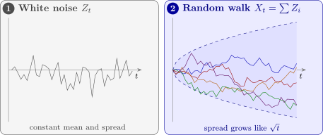

5.1 Definition and properties
Definition 5.1.1. Let \(\{Z_t\}\) be a purely random process with mean \(\mu \) and variance \(\sigma _Z^2\). The process \(\{X_t\}\) is a random walk if \[ X_t = X_{t-1} + Z_t . \]
The process is usually started at \(X_0 = 0\), so that \(X_1 = Z_1\) and, by repeated substitution, \[ X_t = Z_1 + Z_2 + \dots + Z_t = \sum _{i=1}^tZ_i . \] When \(\mu \ne 0\) the process is a random walk with drift. Random walks are standard models for share prices and exchange rates: tomorrow’s price is today’s plus an unpredictable change.
Theorem 5.1.2. For the random walk started at \(X_0 = 0\), and \(1 \le s \le t\), \begin {gather*} E(X_t) = t\mu , \qquad \Var (X_t) = t\sigma _Z^2 , \\ \Cov (X_s, X_t) = s\sigma _Z^2 , \qquad \Corr (X_s, X_t) = \sqrt {s/t} . \end {gather*} The process is not stationary, but its first difference \(\nabla X_t = X_t - X_{t-1} = Z_t\) is purely random.
Proof. \(E(X_t) = \sum _{i=1}^tE(Z_i) = t\mu \), and since the \(Z_i\) are independent, \(\Var (X_t) = \sum _{i=1}^t\Var (Z_i) = t\sigma _Z^2\). For \(s \le t\), \begin {align*} \Cov (X_s, X_t) &= \Cov \Bigl (\sum _{i=1}^sZ_i, \ \sum _{j=1}^tZ_j\Bigr ) = \sum _{i=1}^s\sum _{j=1}^t\Cov (Z_i, Z_j) \\ &= \sum _{i=1}^s\Var (Z_i) = s\sigma _Z^2 , \end {align*}
since only the terms with \(i = j \le s\) are non-zero. Dividing by \(\sqrt {s\sigma _Z^2 \cdot t\sigma _Z^2}\) gives the correlation. The variance grows with \(t\) (and the mean too, unless \(\mu = 0\)), so the process is not stationary; and \(\nabla X_t = Z_t\) by definition. □
The correlation \(\sqrt {s/t}\) depends on \(s\) and \(t\) separately, not just on their difference: \(X_{10}\) and \(X_{20}\) have correlation \(\sqrt {0.5} = 0.71\), while \(X_{100}\) and \(X_{110}\), also ten steps apart, have \(\sqrt {100/110} = 0.95\). The paths wander further and further from their starting point (Figure 4), and the correlogram of an observed random walk dies away only very slowly, like that of a series with a trend. Differencing turns it back into white noise: this is the simplest example of the integrated models of Section 10.

Example 5.1.3. A share price is modelled as a random walk with drift, \(X_t = X_{t-1} + Z_t\), with \(X_0 = 0\) measured from today’s price and daily changes \(Z_t \sim N(0.5, 4)\), independent. Find the mean and variance of the price change over ten days, the probability that it exceeds \(10\), and the correlation between the changes over ten and twenty days.
Solution. By Theorem 5.1.2, \(E(X_{10}) = 10(0.5) = 5\) and \(\Var (X_{10}) = 10(4) = 40\), so \(\operatorname {sd}(X_{10}) = 6.32\). As a sum of independent normal variables, \(X_{10}\) is normal, and \[ P(X_{10} > 10) = P\Bigl (Z > \frac {10 - 5}{6.32}\Bigr ) = P(Z > 0.79) = 0.215 . \] The correlation between \(X_{10}\) and \(X_{20}\) is \(\sqrt {10/20} = 0.71\): half of the twenty-day change is the ten-day change, so the two are strongly related. The drift adds \(0.5\) a day on average, but after ten days its effect, \(5\), is smaller than one standard deviation of the noise, which is why the random walk is so hard to forecast.
Questions on this section
Stuck on something here? Ask below and it stays attached to this topic.